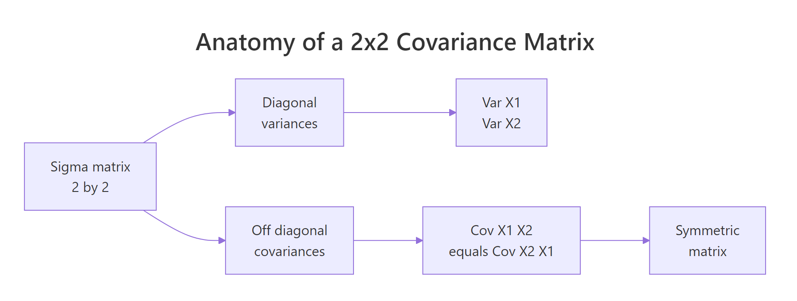
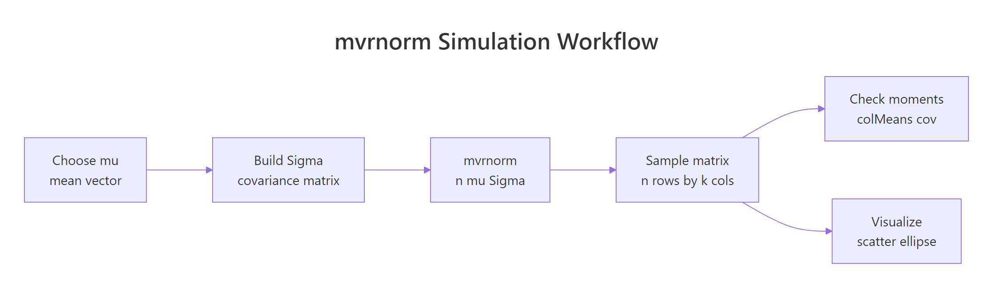

Multivariate Normal Distribution in R: MASS::mvrnorm, Simulation & Plots
The multivariate normal distribution generalises the familiar bell curve to two or more correlated variables at once. In R you simulate from it with MASS::mvrnorm(n, mu, Sigma) — supply a mean vector plus a covariance matrix and you get a matrix of correlated draws in a single line. This post walks through simulating, visualizing, and sanity-checking multivariate normal data, plus the covariance-matrix anatomy that makes everything click.
How do you simulate multivariate normal data with mvrnorm()?
The fastest way to feel the multivariate normal is to draw a handful of samples and see them lined up side by side. Pick a mean vector mu, pick a covariance matrix Sigma, and mvrnorm() returns a matrix where every row is one correlated observation. Everything else in this tutorial — plots, checks, higher dimensions — builds on this one call.
Let's simulate five draws from a two-dimensional normal with means at zero and a strong positive correlation of 0.7.
Each row is one observation of the pair $(X_1, X_2)$. Notice how rows where X1 is positive also tend to have a positive X2 — that's the 0.7 correlation showing up in just five samples. The diagonal of Sigma sets each variable's variance to 1, and the off-diagonal sets their covariance.
Five rows is a taste. For real work you want hundreds or thousands of draws so the sample moments stabilise.
The output is always a matrix with n rows and length(mu) columns. One row, one observation — that convention carries through to every visualisation and summary in R.
colnames(sim) <- c("X1", "X2") makes every downstream call — head(), ggplot(), cor() — print meaningful labels instead of [,1] and [,2].Try it: Simulate 3 draws with mean vector c(5, 10) and a covariance matrix whose diagonal is 1 and off-diagonals are -0.5. The two columns should trend in opposite directions.
Click to reveal solution
Explanation: A negative off-diagonal forces X1 and X2 apart — when one is above its mean, the other tends below.
What does the covariance matrix actually control?
The covariance matrix Sigma is where the whole shape of a multivariate normal lives. Read it like this: the diagonal entries are the variances of each variable, and the off-diagonal entries are the covariances between them. Because covariance is symmetric, Sigma is always symmetric — the value at row 1, column 2 equals the value at row 2, column 1.

Figure 1: Covariance-matrix anatomy — diagonal entries hold variances, off-diagonal entries hold the shared covariance, and the matrix is symmetric.
Covariance and correlation are close cousins. If $\sigma_i$ is the standard deviation of variable $i$ and $\rho_{ij}$ is its correlation with variable $j$, then:
$$\Sigma_{ij} = \rho_{ij}\,\sigma_i\,\sigma_j$$
Where:
- $\Sigma_{ij}$ — the covariance between variables $i$ and $j$ (the matrix entry)
- $\rho_{ij}$ — the correlation between the two variables, between -1 and 1
- $\sigma_i, \sigma_j$ — the standard deviations of each variable
That formula lets you design Sigma from quantities you can actually reason about — spreads and correlations — instead of covariances that mix the two.
Reading Sigma2 left-to-right: variable 1 has variance 4 (sd = 2), variable 2 has variance 9 (sd = 3), and the covariance is 0.6 * 2 * 3 = 3.6. cov2cor() divides the off-diagonal by the product of standard deviations and returns the original correlation — a handy sanity check whenever you're handed a covariance matrix and want to see the underlying correlations.
mvrnorm() requires Sigma to be positive semi-definite — every eigenvalue non-negative. Intuitively this rules out impossible correlations like 0.9 between A and B, 0.9 between B and C, and -0.9 between A and C.
Both eigenvalues are positive, so Sigma2 defines a valid multivariate normal.
eigen(Sigma)$values — any negative value means your correlation structure is internally inconsistent.Try it: Build a Sigma for variables with variances 4 and 9 and correlation -0.5. Then verify with cov2cor().
Click to reveal solution
Explanation: The outer diag(sds) calls rescale a correlation matrix into a covariance matrix, preserving the sign.
How do you visualize a bivariate normal distribution?
A scatter plot alone is a fine start, but two extras make the shape pop: density contours (lines of equal probability density, like elevation lines on a topographic map) and confidence ellipses (regions that contain a chosen fraction of the distribution).
Let's bring the 500-row sim from earlier into a data frame and layer all three.
geom_density_2d() estimates the joint density from the points and draws contour lines. The contours of a bivariate normal are ellipses tilted along the direction of correlation — here, a positive slope because rho = 0.7.
The 95% confidence ellipse is the most common visual summary. stat_ellipse() draws it directly from the data, assuming a normal distribution.
Roughly 95% of the draws should sit inside the solid red ellipse and 68% inside the dashed orange one — the bivariate analogues of the familiar one- and two-sigma bands on a single variable.
Try it: Swap the ellipse level to a single stat_ellipse(level = 0.50) — the region that contains half of the distribution.
Click to reveal solution
Explanation: stat_ellipse() accepts any level between 0 and 1; 0.5 gives the median ellipse — half of the probability mass lives inside.
How do you verify simulated data matches the specification?
Simulations are easy to trust and easy to get wrong, so always check that the draws actually match the inputs. Three summaries cover it: sample mean (should approach mu), sample covariance (should approach Sigma), and sample correlation (should approach cov2cor(Sigma)).
With 500 draws the sample means land near 0, the sample variances near 1, and the sample correlation near 0.67 — close to the true 0.7 but not exact. That gap is sampling noise; draw 50,000 samples and it will shrink.
When you want an exact match for teaching or reproducible demos, pass empirical = TRUE.
The sample mean is exactly zero and the sample correlation is exactly 0.7. mvrnorm() rescaled and recentered the draws so their sample moments hit the specification on the nose.
empirical = TRUE gives you a reproducible demo, not a true random sample. The rescaled draws no longer have the sampling variability a real sample would. Use it when you want textbook-clean plots or deterministic tests; leave it off for anything downstream that relies on genuine randomness (bootstrap, power simulation, MCMC).Try it: Simulate 50 draws from the same mu and Sigma without empirical = TRUE and print the sample correlation. How close is it to 0.7?
Click to reveal solution
Explanation: With only 50 draws the sample correlation wanders several hundredths away from the true 0.7. This is exactly the scenario empirical = TRUE short-circuits.
How do you scale mvrnorm() to higher dimensions?
The API stays the same for any number of variables: give mvrnorm() a k-length mean vector and a k-by-k covariance matrix. Only your Sigma bookkeeping gets more involved.

Figure 2: The mvrnorm() workflow — build mu and Sigma, draw samples, then check moments and visualize.
Suppose you want to simulate three test scores (math, reading, writing) with means 60, 70, 75, standard deviations 10, 8, 9, and a moderate correlation structure.
Column names flow through from mu3 because we gave it a named vector — a small touch that pays off every time you print or plot the matrix.
pairs() is the quickest way to eyeball a three- or four-variable simulation. It draws a grid of scatter plots, one per pair.
The off-diagonal entries of cor(sim3) land close to the 0.5 / 0.4 / 0.6 you specified — the k-variable case works exactly like the 2-D case, just with more bookkeeping for Sigma.
Try it: Extend to four variables — add a "science" score with mean 65, sd 11, and correlations 0.3, 0.55, 0.5 with math, reading, writing (in that order). Simulate 200 draws and run pairs().
Click to reveal solution
Explanation: The exact same build pattern — diag(sds) %*% cor %*% diag(sds) — scales to any dimension. pairs() handles the visualisation.
Practice Exercises
Exercise 1: Correlated test scores with a ggplot summary
Simulate 300 students with mean math score 75 and reading score 65, variance 100 for each, and correlation 0.5. Put the result in a data frame with columns math and reading, then make a ggplot scatter with 95% and 68% confidence ellipses. Compute and print the sample correlation.
Click to reveal solution
Explanation: Variance 100 means sd = 10 for both scores. The 0.5 correlation shows as a visible tilt in the scatter and a tilted pair of ellipses.
Exercise 2: Negative correlation and the sign of the ellipse
Simulate 200 draws with means c(10, 20), variances c(4, 9), and correlation -0.6. Print the sample correlation and plot a 90% ellipse. In one line, explain why the ellipse tilts the opposite way from Exercise 1.
Click to reveal solution
Explanation: Positive covariance tilts the ellipse up-right (both variables move together); negative covariance tilts it down-right (one goes up as the other goes down).
Complete Example: Correlated Exam Scores End-to-End
Tying every step together: you're simulating 400 students' math, reading, and writing scores with realistic correlations for a teaching demo. You want sample moments that match the specification, a pairs plot for the visual, and a sanity-check summary of each score.
Every sample statistic lands within sampling noise of the spec: means within a point of 62, 71, 74 and correlations within two hundredths of 0.55 / 0.45 / 0.65. That combination — design Sigma, simulate, verify, visualise — is the full workflow you'll reuse whenever you need realistic synthetic data for testing, teaching, or power analysis.
Summary
| Step | Function | What it does |
|---|---|---|
| Define the center | c() |
the mean vector mu |
| Define the spread | matrix() or diag(sds) %*% cor %*% diag(sds) |
the covariance matrix Sigma |
| Draw samples | MASS::mvrnorm(n, mu, Sigma) |
returns n by length(mu) matrix of draws |
| Check the specification | colMeans(), var(), cor() |
sample moments should match mu and Sigma |
| Lock moments exactly | mvrnorm(..., empirical = TRUE) |
sample moments equal inputs (teaching mode) |
| Visualize (2-D) | geom_density_2d(), stat_ellipse() |
density contours and confidence ellipses |
| Visualize (k-D) | pairs() |
scatter grid across every variable pair |
References
- Venables, W. N. & Ripley, B. D. — Modern Applied Statistics with S, 4th ed. Springer (2002). Link
- MASS package —
mvrnorm()reference page, R-project documentation. Link - Genz, A. & Bretz, F. — Computation of Multivariate Normal and t Probabilities. Lecture Notes in Statistics, Springer (2009). Link
mvtnormpackage — Multivariate Normal and t Distributions, CRAN. Link- Wasserman, L. — All of Statistics: A Concise Course in Statistical Inference. Springer (2004). Chapter 2: Random Variables.
- Wickham, H. — ggplot2: Elegant Graphics for Data Analysis, 3rd ed. Link
Continue Learning
- Normal, t, F & Chi-Squared Distributions in R — the univariate foundations this post builds on.
- Correlation Analysis in R — compute, interpret, and test correlations between variables.
- Sampling Distributions in R — how simulated means and variances behave across repeated samples.